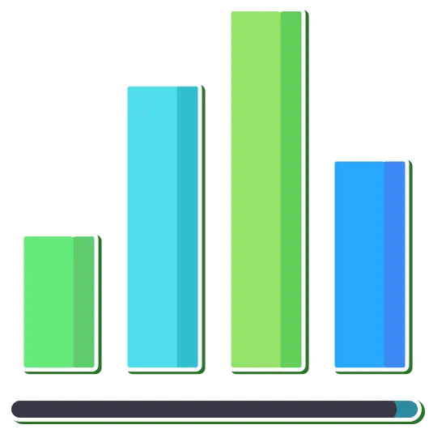
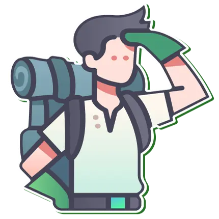

<footer class="footer">

    <div class="footer-container">

        <div class="footer-item">

            
            <p>Veux-tu des statistiques</p>
            <p>précises sur la région ?</p>
            <a href="index.html" id="footerBtnAccueil" class="button_base footer_button">ACCUEIL</a>

        </div>

        <div class="footer-item">

            
            <p>Recherche ce que tu veux</p>
            <p>avec Anna !</p>
            <a href="recherche.html" id="footerBtnRecherche" class="button_base footer_button">EXPLORE AVEC ANNA !</a>

        </div>

        <div class="footer-item">

            
            <p>Pour en savoir plus sur</p>
            <p>les créateurs du site !</p>
            <a href="apropos.html" id="footerBtnApropos" class="button_base footer_button">A PROPOS DE NOUS !</a>

        </div>

    </div>

</footer>